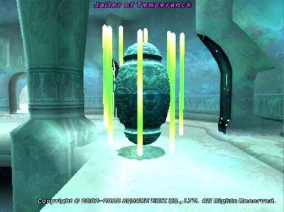
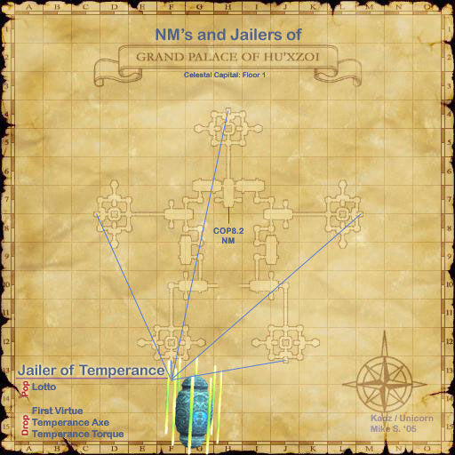

Level 75 reference · Zenith rules
|
Job: Samurai Notorious Monster |
 Image source |


|
Zone |
Level |
Drops |
Steal |
Spawns |
Notes |
|
85 |
5 |
T(S) | |||
|
HP = Detects Low HP; M = Detects Magic; Sc = Follows by Scent; T(S) = True-sight; T(H) = True-hearing JA = Detects job abilities; WS = Detects weaponskills; Z(D) = Asleep in Daytime; Z(N) = Asleep at Nighttime | |||||


Image source
Notes:
- Pops 3-5 seconds after killing the Eo'zdei placeholders that spawn in the small rooms with alcoves in H-4, C-8, L-8, J-13, and F-13 of the ground level of Grand Palace of Hu'Xzoi.
- Immune to direct magic damage (i.e. nukes).
- However, DoT is very effective. Keep Bio II, Poison II/Disseverment poison and Shock/Choke/Burn or Rasp/Drown/Frost on at all times.
- Mijin Gakure does damage the Jailer.
- Immune to all but one type of physical damage at a time. Because of this, damage dealers with multiple damage types are very useful for this fight.
- With rings out, only vulnerable to Slashing damage.
- With poles out, only vulnerable to Piercing damage.
- With nothing out, only vulnerable to Blunt damage.
- Tomahawk (Ability) allows all physical damage types to hurt the Jailer.
- Like other Zdei, its TP moves depend on whether it has rings out, poles out, or nothing out.
- Most dangerous in Blunt mode, when it can use Meikyo Shisui+Optical Induration to petrify most of the alliance.
- Uses Meikyo Shisui multiple times.
- Susceptible to Gravity and Flash, immune to Blind, Slow, Paralyze, Elegy, Stun, Bind and Requiem.
- Moves very fast. About 1 1/2 times the speed of normal running players.
- It will depop if it remains idle for 2 minutes.
- Temperance Axe and First Virtue drop 100% of the time.
Adapted from Eden Wiki: Jailer of Temperance · Contributors and history · CC BY-SA 4.0. Revision 1963. Layout, links and optional background text adapted for Zenith.